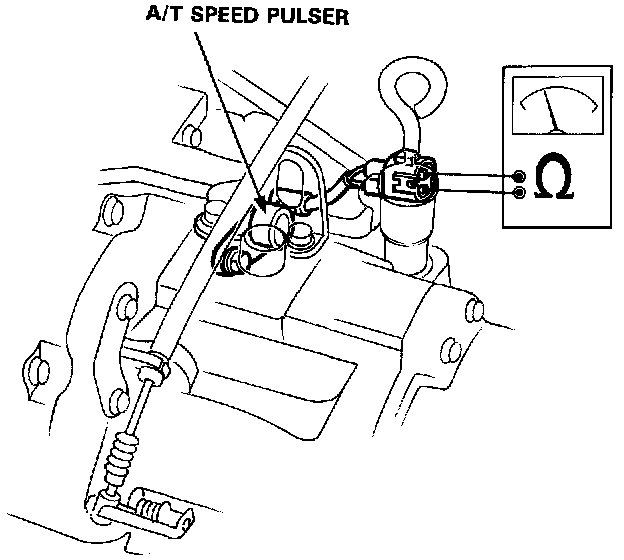

On-Vehicle Test

A/T Speed Pulser Test (Coupe Only)
1. Apply the parking brake, block the rear wheels and jack up the front of the car.
2. Disconnect the A/T speed pulser 2P connector.
3. Rotate the front wheels and be sure that continuity and no continuity appear alternately between the two terminals.